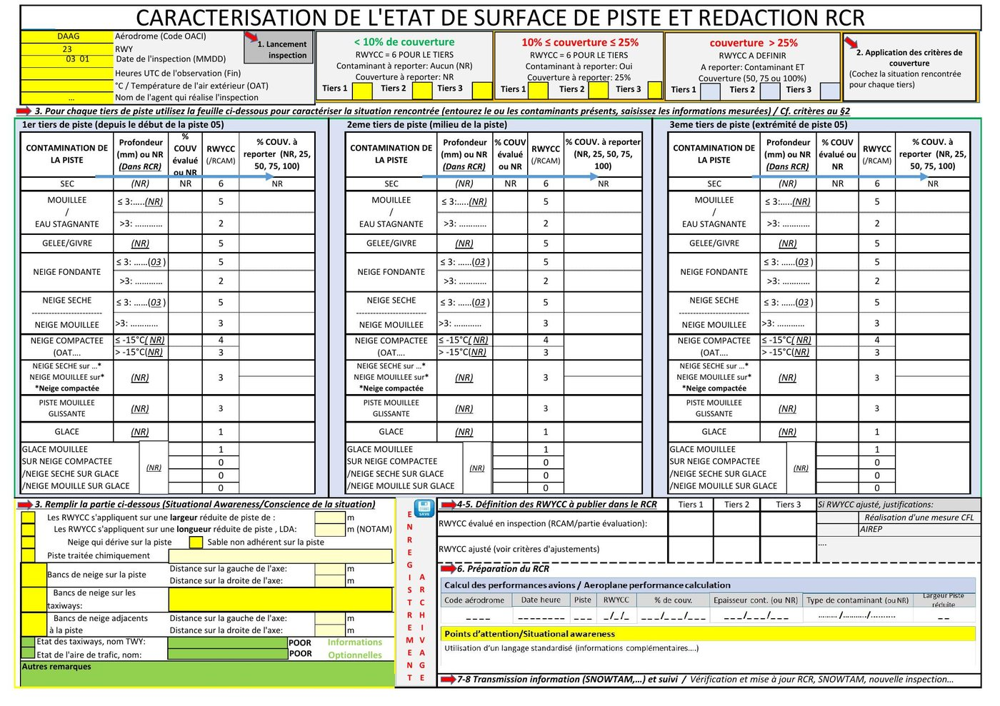

Module 3 · The RCR
Lesson 08: Writing the RCR
Lesson 8 of 10 · about 14 min
Learning objectives
- Fill in the performance section in the correct format.
- Use the standard expressions of the situational awareness section.
- Write RCRs for typical situations.
Performance section — format
| Item | Format | Example |
|---|---|---|
| Aerodrome location indicator (Doc 7910) | nnnn | DAAG |
| Date and time of assessment (UTC) | MMDDhhmm | 01030723 |
| Lower runway designator | nn[L/C/R] | 05 |
| RWYCC per third | n/n/n | 5/5/2 |
| Coverage per third | NR, 25, 50, 75, 100 | 100/100/75 |
| Depth per third | NR or 2–3 digits | NR/NR/06 |
| Contaminant per third | CAPITALS | WET/WET/STANDING WATER |
| Width to which the codes apply, if less than published | nn | 30 |

Typical RCRs
Write it on paper, then tap to compare.
Situational awareness section
- RWY nn LDA REDUCED TO [n]nnn · RWY nn DRIFTING SNOW · RWY nn LOOSE SAND · RWY nn CHEMICALLY TREATED
- RWY nn SNOWBANK Lnn / Rnn / LRnn FM CL · TWY nn SNOWBANK · RWY nn ADJ SNOWBANKS
- TWY nn POOR · APRON nnnn POOR · free-text remarks
- UPGRADED or DOWNGRADED to report an adjustment of the RWYCC.
Only CAPITAL letters and digits. In the performance section, a space separates the items and "/" the thirds; in the situational awareness section a full stop separates the groups. Example: RWY 22L LDA REDUCED TO 1450. RWY 02R LOOSE SAND. TWY B POOR.
The drafting aid

Key takeaways
- Performance section: aerodrome, MMDDhhmm, lower designator, RWYCC, coverage, depth, contaminant — per third.
- Capitals and digits only; space between items, full stop between situational awareness groups.
- UPGRADED / DOWNGRADED report an adjustment.
Knowledge check
How is a whole wet runway (less than 3 mm) reported?
- 6/6/6 DRY
- 5/5/5 100/100/100 NR/NR/NR WET/WET/WET
- 2/2/2 STANDING WATER
- 5/5/5 NR/NR/NR 03/03/03
Answer: B. WET, RWYCC 5, coverage 100, depth not reported.